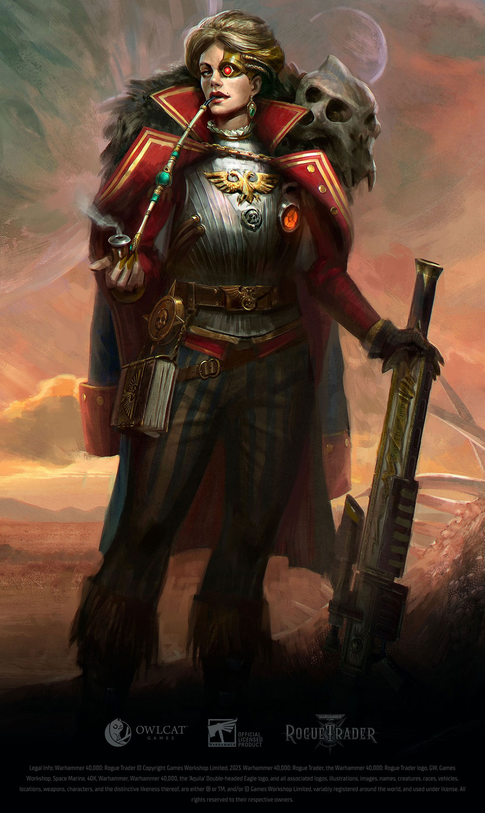
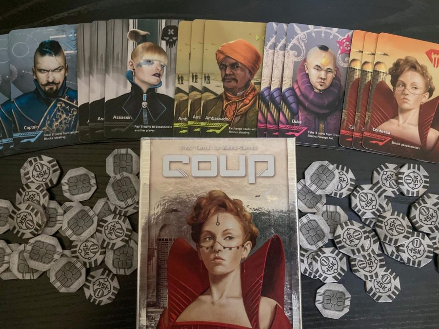
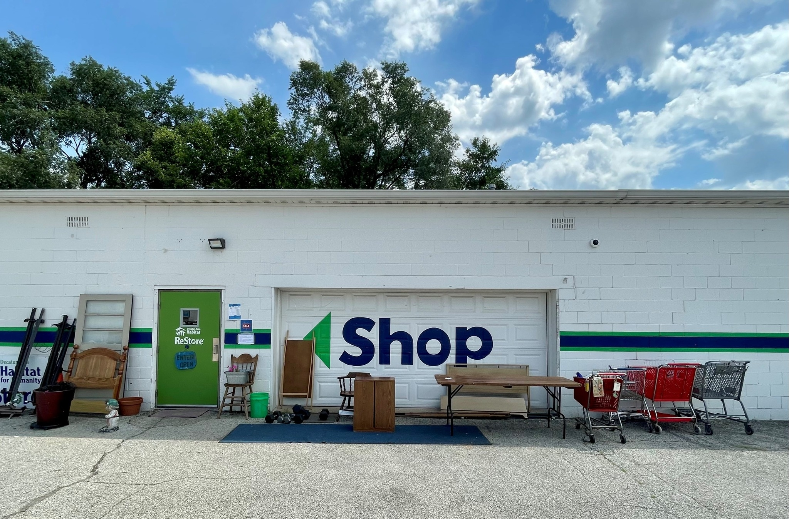
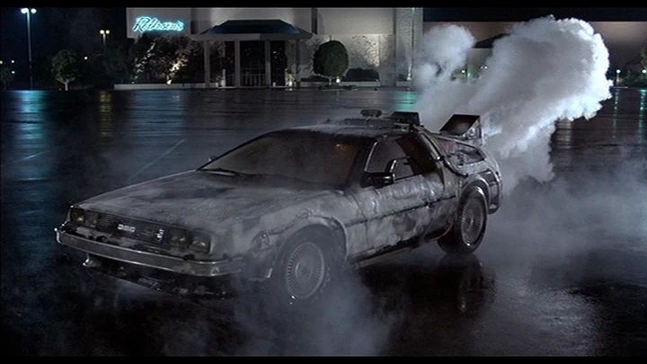
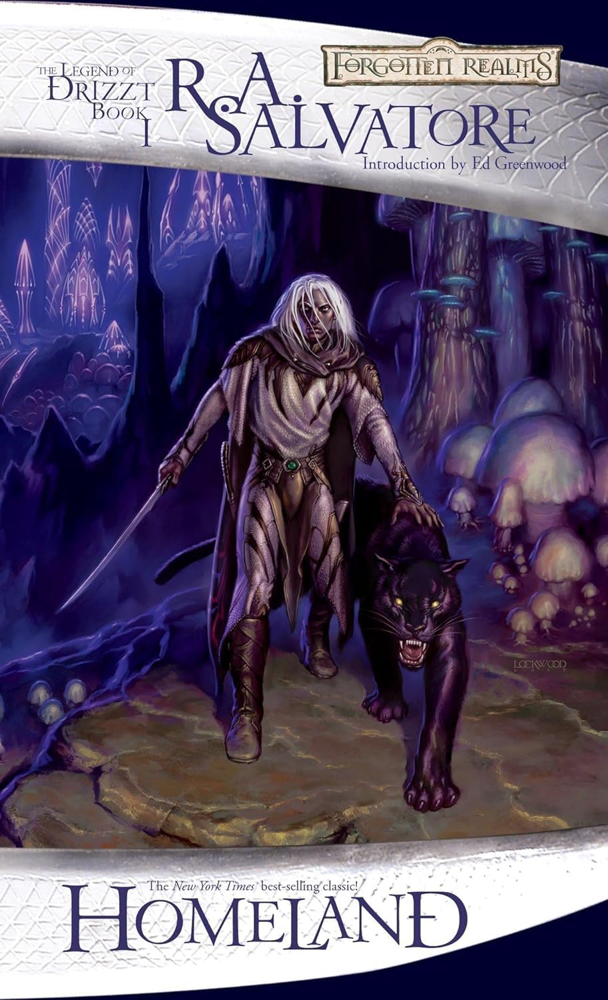
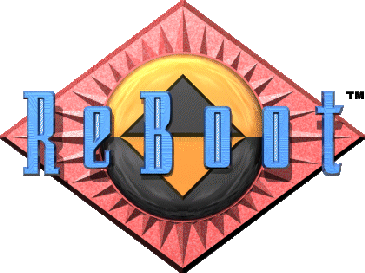

Welcome to My Website
Hi, I'm Erik Kendall! Explore my site to learn more about my background, interests, and professional journey. Whether you're here to discover my passions, check out my certifications, or simply get to know me better, I hope you find the content engaging and informative.
Gaming & Tabletop
I have a deep passion for gaming, both digital and tabletop. From immersive video games to strategic board games, I enjoy the challenge and creativity they offer. I'm an avid player of Dungeons & Dragons (DnD) and Rogue Trader, where I can dive into rich storytelling and complex character development. Additionally, I love playing card games like Coup, which test my strategic thinking and social skills. Gaming is not just a hobby for me; it's a way to connect with others and explore new worlds.


Creative Passions
Writing is one of my greatest creative outlets. I enjoy crafting stories, whether they're short fiction, character backstories for tabletop games, or personal reflections. Writing allows me to express my thoughts and ideas in a way that feels both therapeutic and fulfilling. I often find inspiration in the world around me, and I love the process of turning those ideas into written words. For me, writing is not just a hobby; it's a way to explore new perspectives and share my creativity with others.
Community & Learning
I believe in the importance of giving back to the community and fostering a love for learning. I have experience in tutoring, where I help others understand complex subjects and develop their skills. It's incredibly rewarding to see someone grow and succeed with a little guidance. I'm also interested in volunteering with organizations like Habitat for Humanity, where I can contribute to building stronger communities. Both tutoring and volunteering are ways for me to make a positive impact and connect with others who share a passion for learning and helping.

Favorite Media
I have a deep appreciation for media that inspires and entertains. Some of my all-time favorites include the "Back to the Future" trilogy, which combines science fiction, humor, and heartwarming storytelling. I'm also a fan of the "Drizzt" series by R.A. Salvatore, which offers epic fantasy adventures and complex characters. Additionally, I enjoy the nostalgic charm of "ReBoot," a groundbreaking animated series that explored the world of computers long before it was mainstream.


